Wonder Daily · for little explorers
Sorting Socks
How can we sort a jumble of socks?
Print the pack (PDF)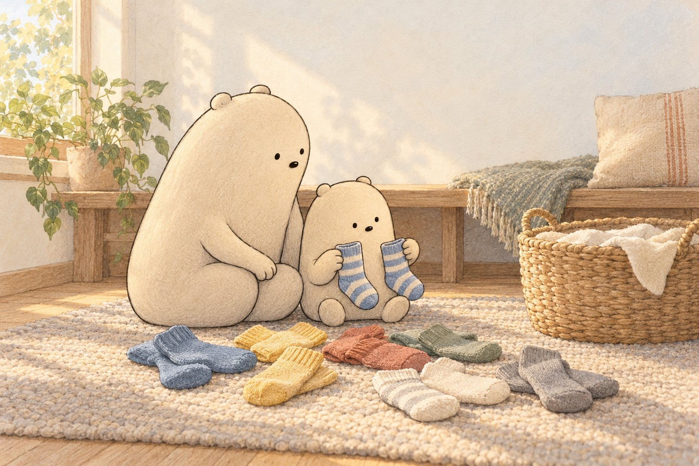
Read aloud together
Tumble, tumble, plop! (Pretend a soft sock lands in your lap.) Big Wonderer tips a basket of clean socks onto the rug. Little Wonderer sees stripes, dots, stars, and many colors.
A jumble is easier to understand when we choose one thing to notice. First they look at color. Blue socks go together. Yellow socks go together.
Ask: Can you point to two socks that share a color?
Next they look at patterns. Stripes join stripes. Dots join dots. Stars join stars. One rule at a time! (Trace pretend stripes in the air.)
Then they compare size. A small sock may look like a big sock, but a matching pair needs the same size, color, and pattern. Ask: Which sock looks biggest?
Little Wonderer places each match side by side. Pair by pair, the jumble becomes tidy groups. One striped sock is left alone.
Ask: Where might its matching sock be?
Big Wonderer finds it peeking from the empty basket. The last pair clicks together. Sorting helped them look closely and find every match.
Why this morning matters
Sorting a jumble of socks by one clue helps your child group and compare while practicing counting, sounds and tracing.
Tonight, step by step
- Read the story aloud together and stop at each “Ask”.
- Print the pack and pick two or three pages; there is no need to do them all.
- Point, circle, trace and color. Snip only with a grown-up.
- Fold the picture book and read it again at bedtime.
Inside the printout
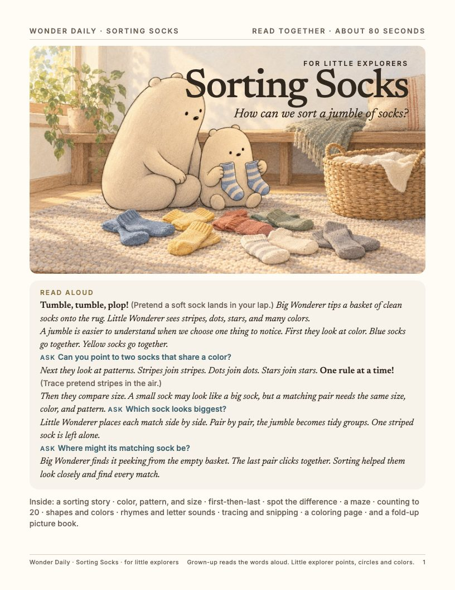
1. Cover and read-aloud 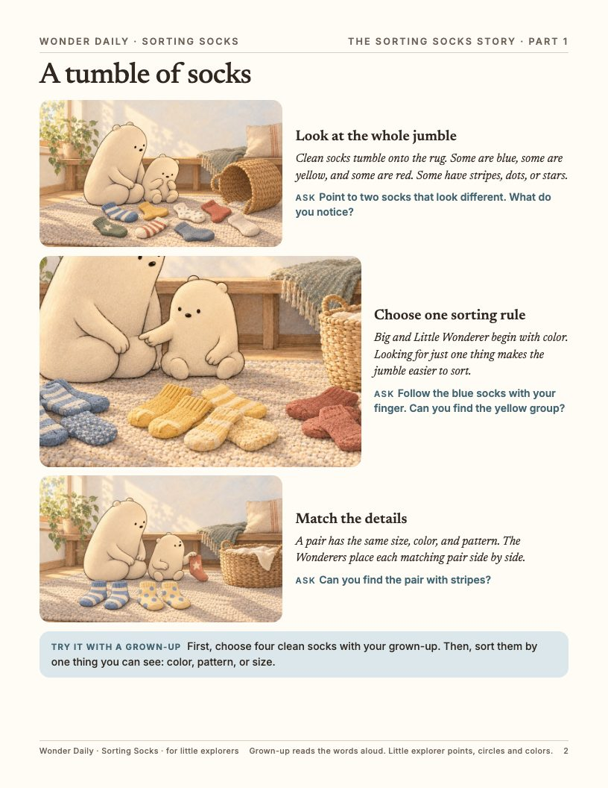
2. The story 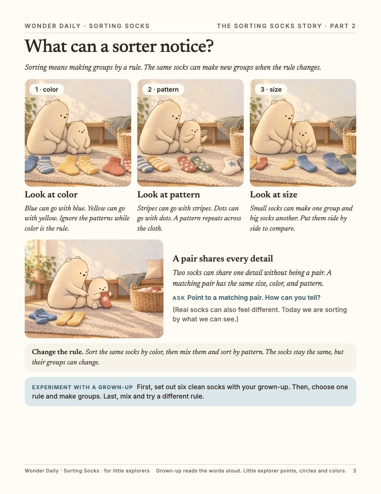
3. Science and an experiment 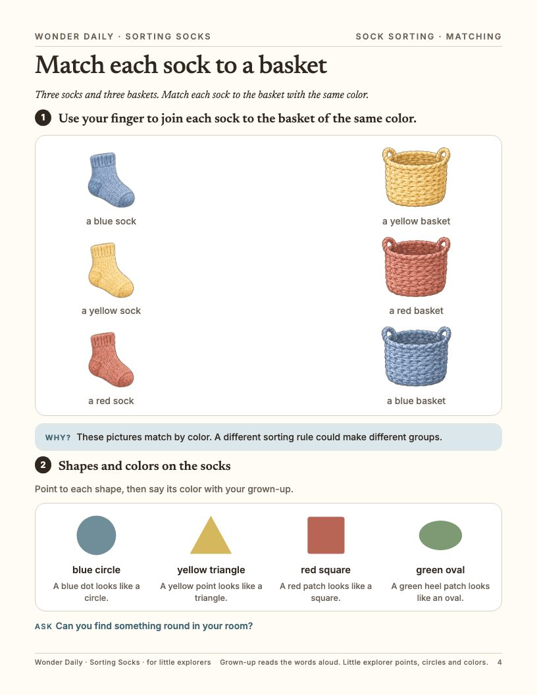
4. Matching, shapes and colors 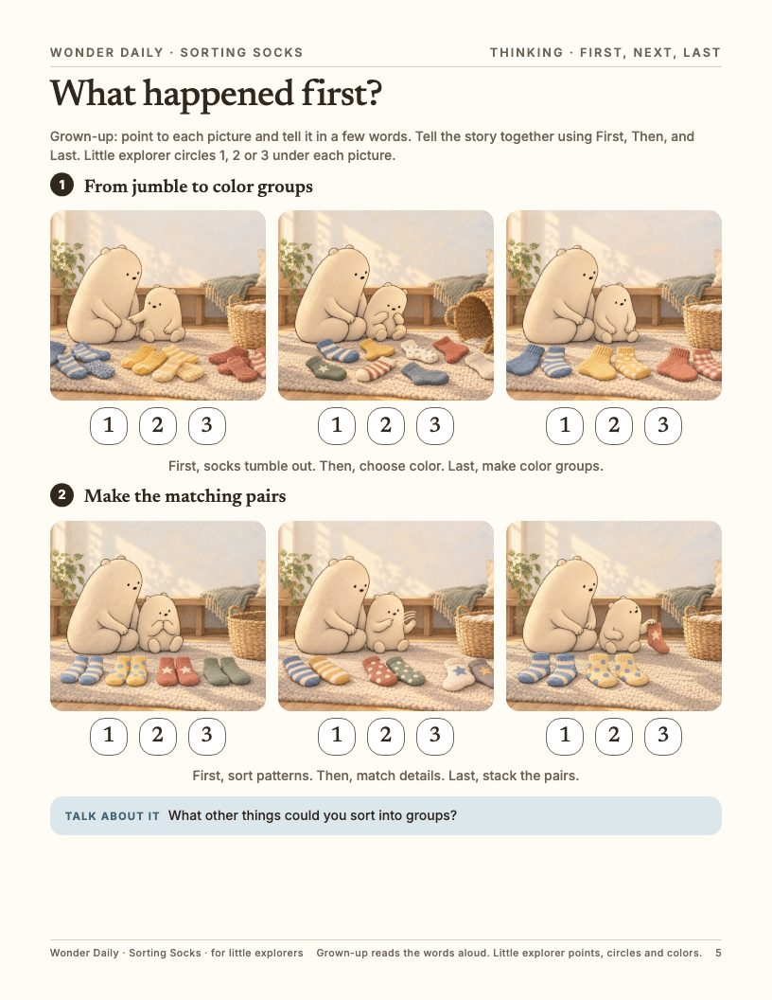
5. First, next, last 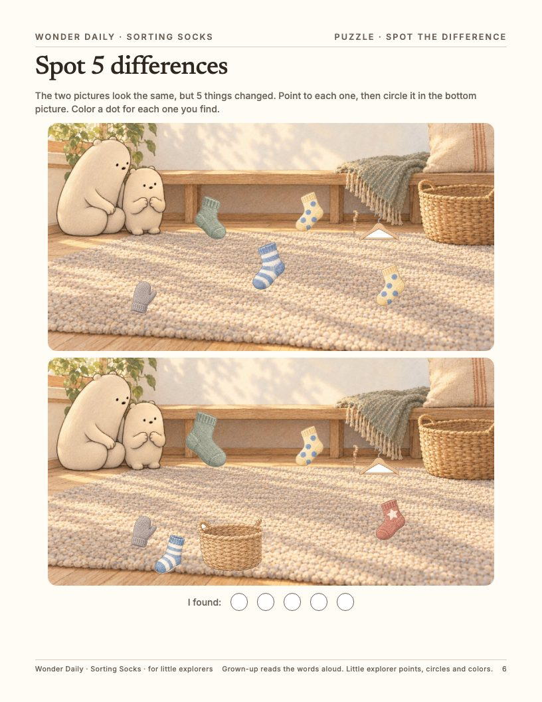
6. Spot the difference 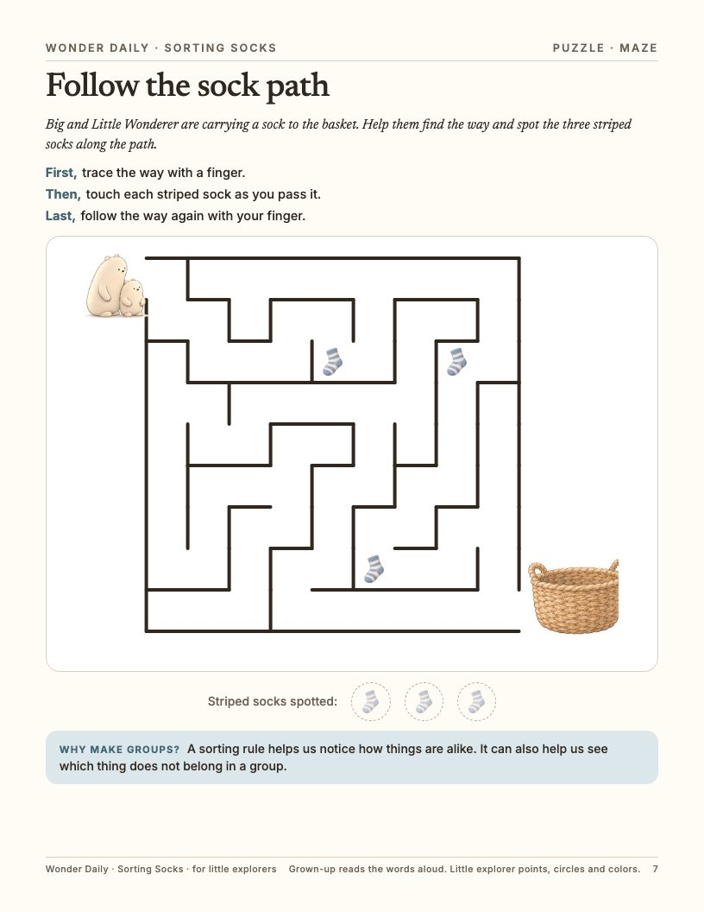
7. Maze 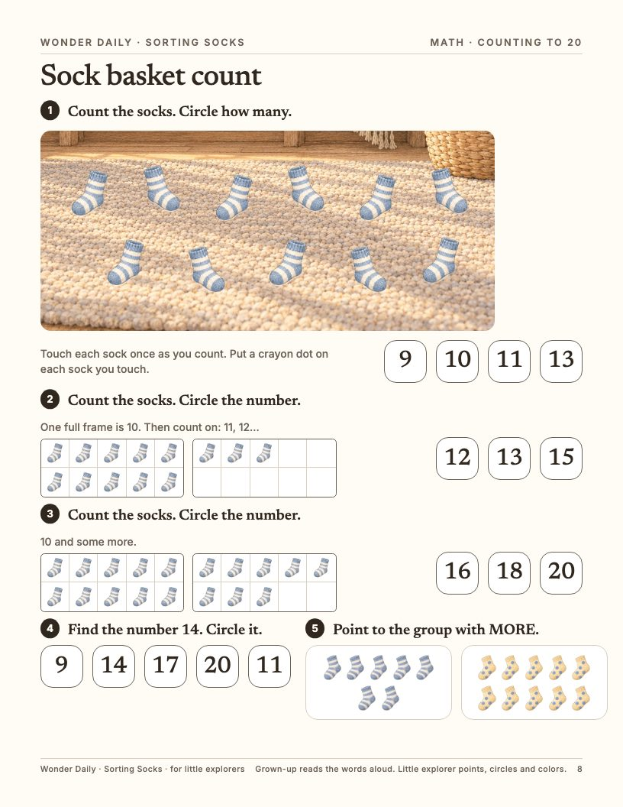
8. Counting to 20 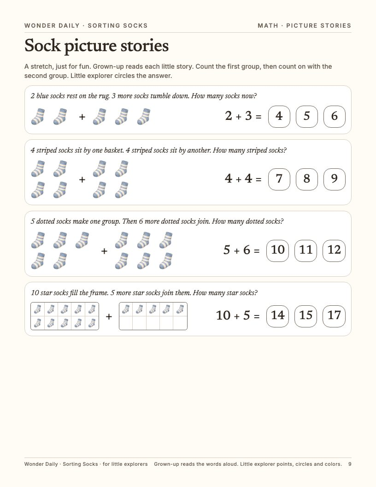
9. Picture stories 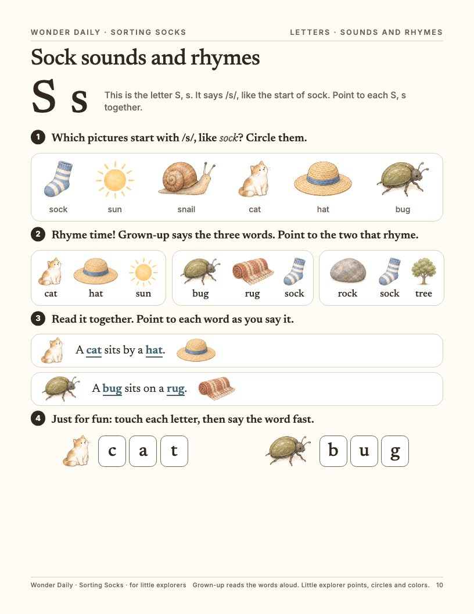
10. Sounds and rhymes 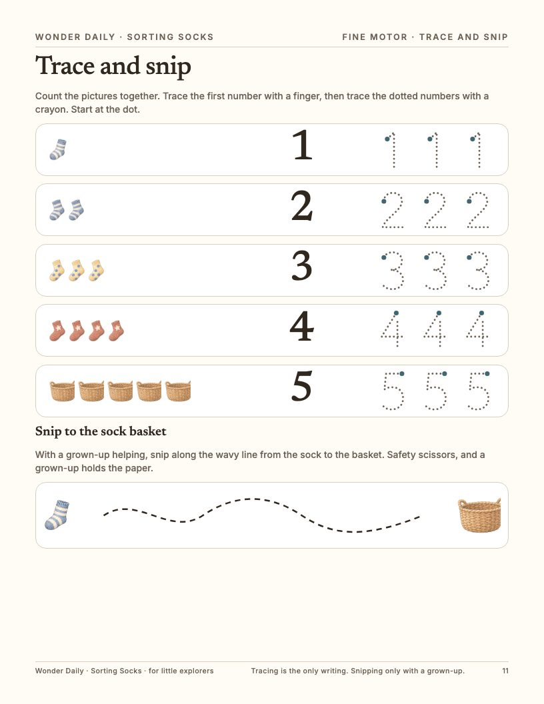
11. Trace and snip 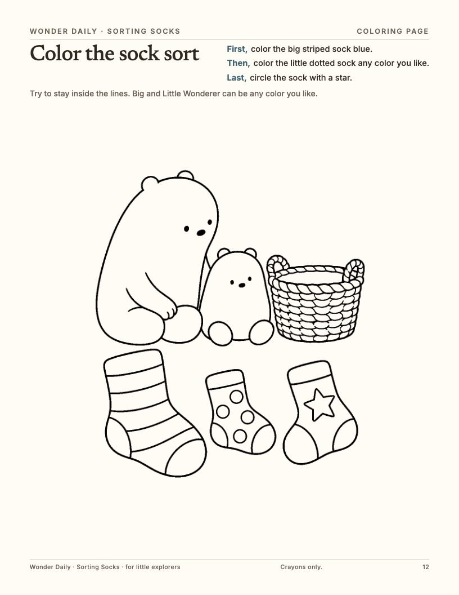
12. Coloring page